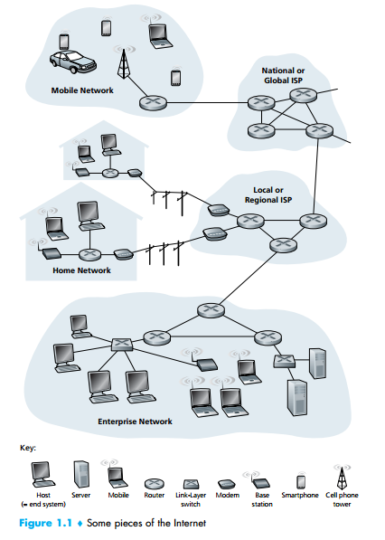

A Nuts-and-Bolts Description
The Internet is a computer network that interconnects hundreds of millions of computing devices throughout the world. Not too long ago, these computing devices were primarily traditional desktop PCs, Linux workstations, and so-called servers that store and transmit information such as Web pages and e-mail messages. Increasingly, however, nontraditional Internet end systems such as laptops, smartphones, tablets, TVs, gaming consoles, Web cams, automobiles, environmental sensing devices, picture frames, and home electrical and security systems are being connected to the Internet. Indeed, the term computer network is beginning to sound a bit dated, given the many nontraditional devices that are being hooked up to the Internet. In Internet jargon, all of these devices are called hosts or end systems. As of July 2011, there were nearly 850 million end systems attached to the Internet [ISC 2012], not counting smartphones, laptops, and other devices that are only intermittently connected to the Internet. Overall, more there are an estimated 2 billion Internet users [ITU 2011].

End systems are connected together by a network of communication links and
packet switches. We’ll see in Section 1.2 that there are many types of communication links, which are made up of different types of physical media, including coaxial
cable, copper wire, optical fiber, and radio spectrum. Different links can transmit
data at different rates, with the transmission rate of a link measured in bits/second.
When one end system has data to send to another end system, the sending end system segments the data and adds header bytes to each segment. The resulting packages of information, known as packets in the jargon of computer networks, are then
sent through the network to the destination end system, where they are reassembled
into the original data.
A packet switch takes a packet arriving on one of its incoming communication
links and forwards that packet on one of its outgoing communication links. Packet
switches come in many shapes and flavors, but the two most prominent types in
today’s Internet are routers and link-layer switches. Both types of switches forward packets toward their ultimate destinations. Link-layer switches are typically
used in access networks, while routers are typically used in the network core. The
sequence of communication links and packet switches traversed by a packet from
the sending end system to the receiving end system is known as a route or path
through the network. The exact amount of traffic being carried in the Internet is
difficult to estimate but Cisco [Cisco VNI 2011] estimates global Internet traffic will
be nearly 40 exabytes per month in 2012.
Packet-switched networks (which transport packets) are in many ways similar to transportation networks of highways, roads, and intersections (which transport vehicles). Consider, for example, a factory that needs to move a large
amount of cargo to some destination warehouse located thousands of kilometers
away. At the factory, the cargo is segmented and loaded into a fleet of trucks.
Each of the trucks then independently travels through the network of highways,
roads, and intersections to the destination warehouse. At the destination warehouse, the cargo is unloaded and grouped with the rest of the cargo arriving from
the same shipment. Thus, in many ways, packets are analogous to trucks, communication links are analogous to highways and roads, packet switches are analogous to intersections, and end systems are analogous to buildings. Just as a truck
takes a path through the transportation network, a packet takes a path through computer network.
Packet-switched networks (which transport packets) are in many ways similar to transportation networks of highways, roads, and intersections (which transport vehicles). Consider, for example, a factory that needs to move a large
amount of cargo to some destination warehouse located thousands of kilometers
away. At the factory, the cargo is segmented and loaded into a fleet of trucks.
Each of the trucks then independently travels through the network of highways,
roads, and intersections to the destination warehouse. At the destination warehouse, the cargo is unloaded and grouped with the rest of the cargo arriving from
the same shipment. Thus, in many ways, packets are analogous to trucks, communication links are analogous to highways and roads, packet switches are analogous to intersections, and end systems are analogous to buildings. Just as a truck
takes a path through the transportation network, a packet takes a path through a
computer network.
End systems access the Internet through Internet Service Providers (ISPs),
including residential ISPs such as local cable or telephone companies; corporate
ISPs; university ISPs; and ISPs that provide WiFi access in airports, hotels, coffee
shops, and other public places. Each ISP is in itself a network of packet switches
and communication links. ISPs provide a variety of types of network access to the
end systems, including residential broadband access such as cable modem or DSL,
4 CHAPTER 1 • COMPUTER NETWORKS AND THE INTERNET
high-speed local area network access, wireless access, and 56 kbps dial-up modem
access. ISPs also provide Internet access to content providers, connecting Web
sites directly to the Internet. The Internet is all about connecting end systems to
each other, so the ISPs that provide access to end systems must also be interconnected. These lower-tier ISPs are interconnected through national and international upper-tier ISPs such as Level 3 Communications, AT&T, Sprint, and NTT.
An upper-tier ISP consists of high-speed routers interconnected with high-speed
fiber-optic links. Each ISP network, whether upper-tier or lower-tier, is managed
independently, runs the IP protocol (see below), and conforms to certain naming
and address conventions. We’ll examine ISPs and their interconnection more
closely in Section 1.3.
End systems, packet switches, and other pieces of the Internet run protocols
that control the sending and receiving of information within the Internet. The
Transmission Control Protocol (TCP) and the Internet Protocol (IP) are two of
the most important protocols in the Internet. The IP protocol specifies the format of
the packets that are sent and received among routers and end systems. The Internet’s
principal protocols are collectively known as TCP/IP. We’ll begin looking into protocols in this introductory chapter. But that’s just a start—much of this book is concerned with computer network protocols!
Given the importance of protocols to the Internet, it’s important that everyone
agree on what each and every protocol does, so that people can create systems and
products that interoperate. This is where standards come into play. Internet standards are developed by the Internet Engineering Task Force (IETF)[IETF 2012].
The IETF standards documents are called requests for comments (RFCs). RFCs
started out as general requests for comments (hence the name) to resolve network
and protocol design problems that faced the precursor to the Internet [Allman 2011].
RFCs tend to be quite technical and detailed. They define protocols such as TCP, IP,
HTTP (for the Web), and SMTP (for e-mail). There are currently more than 6,000
RFCs. Other bodies also specify standards for network components, most notably
for network links. The IEEE 802 LAN/MAN Standards Committee [IEEE 802
2012], for example, specifies the Ethernet and wireless WiFi standards.